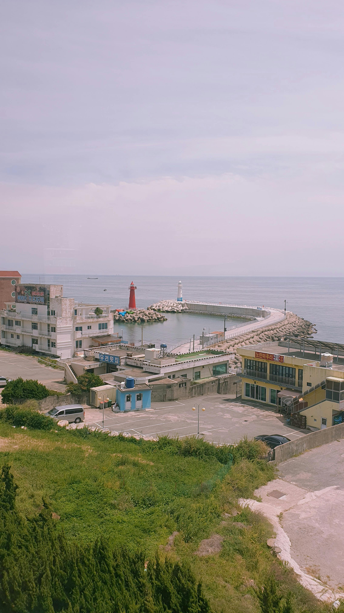

Discover Korea
Подорож у культуру та життя Південної Кореї
Modern Seoul
Мегаполіс майбутнього та інновацій
Nature & Harmony
Спокій корейського моря
Південна Корея — це дивовижний приклад того, як країна може за кілька десятиліть перетворитися з аграрної держави на світового технологічного лідера. Це місце, де стародавні буддійські храми стоять у затінку дзеркальних хмарочосів, а традиційний етикет гармонійно співіснує з шаленим темпом сучасного життя.
Сьогодні весь світ захоплюється корейською культурою. Це явище отримало назву "Халлю". Воно охоплює все: від популярної музики (K-Pop) та захоплюючих серіалів (дорам) до корейської косметики та моди. Корея стала справжнім трендсеттером, диктуючи правила естетики та стилю молоді по всьому світу.



← Гортайте фотографії вбік →
Південна Корея на 70% складається з гір, що робить її ідеальним місцем для хайкінгу (піших прогулянок). Національною квіткою країни є Мугунхва (Гібіскус сирійський), яка символізує незламність духу та вічність. Корейці дуже шанують природу, тому навіть у мегаполісах, таких як Сеул, ви знайдете багато доглянутих парків та штучних річок, наприклад, знаменитий потік Чхонгечхон.
Бажаєте відвідати Південну Корею восени? Зараз найкращий час для планування подорожі!
Бронюйте тури заздалегідь.